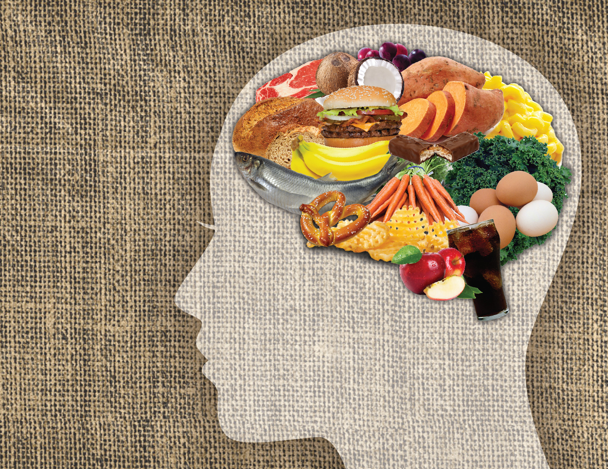
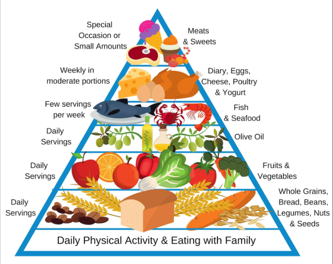
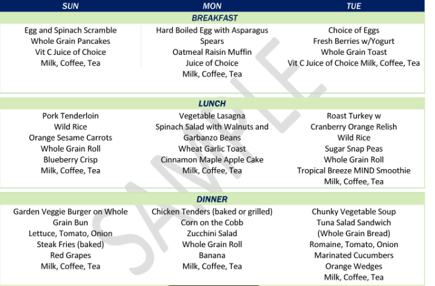
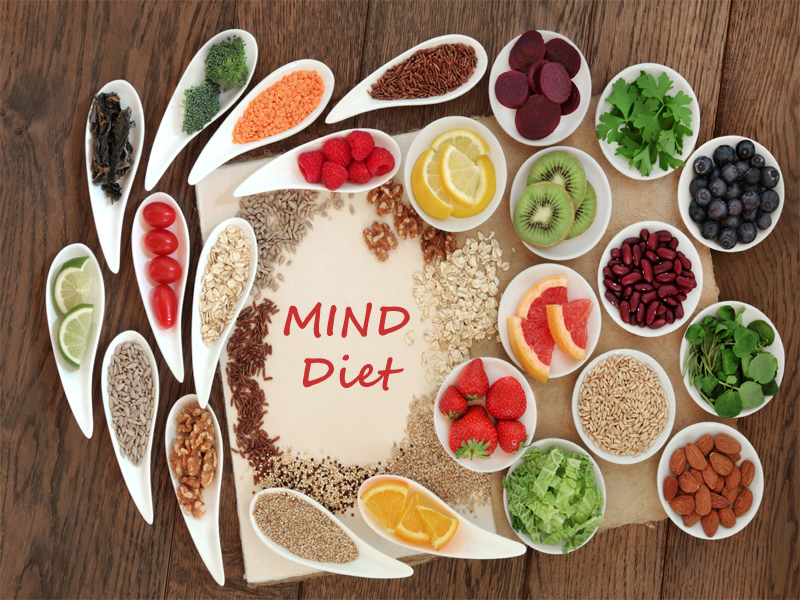
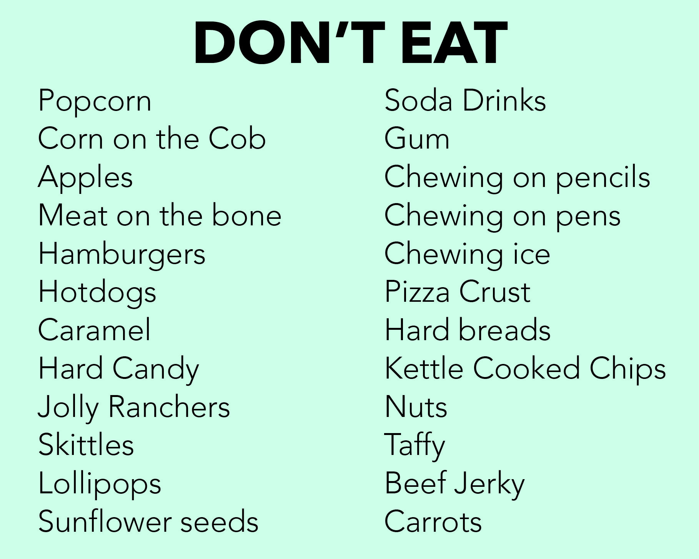
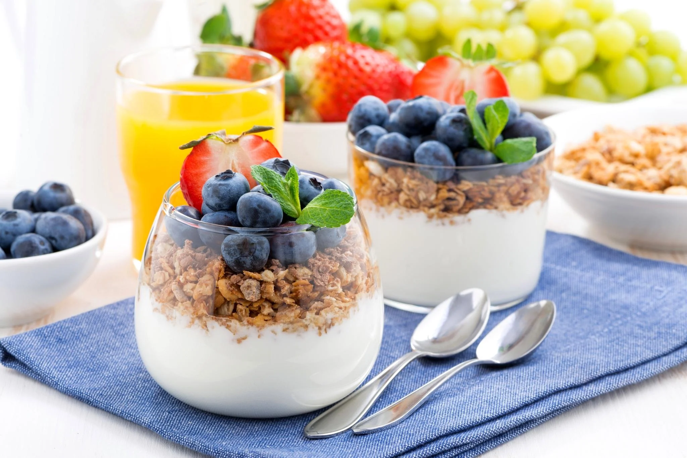

MIND Diet:

Understanding the MIND Diet
The MIND diet, short for “Mediterranean-DASH Intervention for
Neurodegenerative Delay,” was designed to boost brain health by
focusing on foods that support cognitive function. Created by
nutritionist Martha Clare Morris and her team, the MIND diet
combines the best parts of the Mediterranean and DASH diets, both
renowned for promoting heart health, but with a unique twist: it
aims to prevent Alzheimer’s and cognitive decline.
What is the MIND Diet?
The MIND diet is built around ten brain-healthy foods and five
categories of foods to limit. Research suggests that those who
follow the MIND diet, even partially, can reduce their risk of
Alzheimer’s by up to 35%, while those who strictly adhere to it
can see up to a 53% reduction. This diet focuses on keeping the
brain sharp while allowing room for balance and enjoyment in your
meals.
Unlike other diets that may require drastic changes, the MIND diet
is flexible and easy to follow. Think of it as a lifestyle shift
rather than a strict regimen. You’ll explore new, tasty foods that
can help nourish your brain while still enjoying the flavors you
love.
How Does the MIND Diet Work?

The MIND diet operates by encouraging nutrient-dense, whole foods
known for their brain-boosting properties. The main idea is to
include foods rich in antioxidants, vitamins, and healthy fats while
reducing foods high in saturated fats and sugars. The foods in the
MIND diet are grouped into “brain-healthy” and “brain-unhealthy”
categories.
While there are guidelines, you can customize the MIND diet to suit
your tastes. The diet doesn’t demand total elimination of certain
foods but recommends limiting them, making it easier to stick to in
the long run. This approach ensures that your brain gets all the
nutrients it needs to function at its best without feeling
restricted.
Scheduling: How to Get Started with the MIND Diet

Starting the MIND diet is straightforward and enjoyable. Here’s a
simple guide to help you dive into this brain-friendly way of
eating:
-
1. Plan Your Weekly Meals: Begin by creating a
weekly meal plan focused on the ten brain-healthy foods (like
berries, leafy greens, and nuts). Try to limit the
“brain-unhealthy” foods to occasional treats.
-
2. Grocery Shop with a Purpose: Stock up on
brain-boosting foods like fresh vegetables, nuts, whole grains,
and lean proteins. Don’t forget to grab some berries—they’re a
MIND diet favorite!
-
3. Prep Meals in Advance: Make it easy to stick
to the diet by prepping meals and snacks ahead of time. This can
include making a big batch of leafy green salads, chopping
vegetables, or preparing fish fillets for quick access.
-
4. Enjoy Your Food: The MIND diet encourages you
to eat mindfully, savoring every bite and noticing how your meals
make you feel. This helps reinforce positive eating habits over
time.
-
5. Track Your Progress: Use NourishWise to record
your daily meals. This will help you stay on track, see your
progress, and make adjustments as needed to maximize brain
benefits.
Foods You Can Eat on the MIND Diet

Here’s a breakdown of the ten brain-boosting foods in the MIND diet:
-
1. Leafy Green Vegetables: Aim for six servings a
week. Think spinach, kale, and collards—they’re packed with
nutrients that protect brain function.
-
2. Other Vegetables: Include at least one serving
a day of colorful vegetables like bell peppers, carrots, or
tomatoes.
-
3. Berries: Go for two servings of berries per
week, such as blueberries, strawberries, or blackberries, known
for their antioxidant properties.
-
4. Nuts: Snack on a handful of nuts daily, such
as almonds, walnuts, or pecans, for healthy fats and
brain-supporting nutrients.
-
5. Olive Oil: Use olive oil as your primary
cooking fat—it’s a cornerstone of the MIND diet.
-
6. Whole Grains: Choose whole grains like brown
rice, quinoa, or whole-wheat bread, aiming for three servings per
day.
-
7. Fish: Try to eat fish, like salmon or
sardines, at least once a week for brain-healthy omega-3 fatty
acids.
-
8. Beans: Aim for four servings of beans per
week, such as lentils, black beans, or chickpeas.
-
9. Poultry: Enjoy lean poultry, like chicken or
turkey, twice a week as a protein option.
-
10. Wine (Optional): You can have up to one glass
of wine per day if desired. Red wine contains resveratrol, an
antioxidant that may support brain health.
Foods to Limit or Avoid

While the MIND diet allows for flexibility, limiting the following
foods can help you maximize its benefits:
-
1. Butter and Margarine: Try to use less than one
tablespoon per day. Replace these with olive oil where possible.
-
2. Cheese: Enjoy cheese in moderation—less than
once a week if possible.
-
3. Red Meat: Limit red meat, aiming for no more
than three servings per week.
-
4. Fried Foods and Fast Foods: Try to eat these
as rarely as possible, ideally less than once a week.
-
5. Sweets and Pastries: Limit sweets, aiming to
enjoy them less than five times a week.
Fun Tips to Enjoy the MIND Diet

Here are some enjoyable ways to embrace the MIND diet:
-
1. Experiment with New Recipes: Try making
brain-boosting dishes like a leafy green salad with berries and
nuts or a grain bowl with beans and veggies.
-
2. Make it Social: Cook a MIND diet-inspired meal
with friends or family to share the experience and support each
other in healthy eating.
-
3. Track Your Brain Health Progress: Notice how
your focus, memory, and mood improve over time by following the
MIND diet.
Conclusion
Embarking on the DASH diet is about more than just food; it’s a
lifestyle change that can lead to better health and a happier you.
With its focus on whole foods and balanced nutrition, the DASH diet
can help you feel your best while enjoying a diverse array of
delicious meals.
So, what are you waiting for? Dive into the world of DASH, savor
every bite, and watch as you take strides toward a healthier,
happier life. Your journey to wellness starts with every meal.
Cheers to good health!